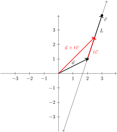

If we consider only linear systems with two variables, then each equation is just a line, which we can graph on a set of axes. We are going to examine the geometry of linear systems of two variables.
First, we are going to look at three linear systems that each have different types of solutions. We can see the solutions by looking at the graphs.
The graph of each line in the linear system
\begin{equation}
\begin{aligned}
x + 2 y \amp = 5, \\
2x - 3 y \amp = -4,
\end{aligned}\tag{1.2.1}
\end{equation}
is
Figure1.2.1.Plot of two intersecting lines
The solution of the system is the point at which they cross. In this case it looks like the point \((1,2)\) or \(x=1\) and \(y=2\text{.}\) This is an example where there is only one solution (or a unique solution).
If we graph the lines in the linear system
\begin{equation}
\begin{aligned}
3x + 7 y \amp= 10, \\
6 x + 14 y \amp= 5,
\end{aligned}\tag{1.2.2}
\end{equation}
we get
Figure1.2.2.Plot of two intersecting lines
As you can see, it doesn’t appear that the lines cross anywhere. In fact, they don’t because the lines are parallel. This is an example of a linear system with no solution.
The linear system
\begin{equation}
\begin{aligned}
x + 2 y = 5, \\
2x + 4 y = 10,
\end{aligned}\tag{1.2.3}
\end{equation}
has the following graph for each line
Figure1.2.3.A plot of two equivalent lines
It appears that there is only one line. This is because both lines have the same graph. Each point on the line is a solution to the linear system and since there are an infinite number of such points, this is an example of a linear system with infinite number of solutions.
You can see if you have two lines, each with two variables, the example in ((1.2.1)) is what happens if the two slopes are different. In this case, there is one (or a unique) solution.
In the other two cases as in equations ((1.2.2)) and ((1.2.3)), both sets of lines have the same slope. In the case of ((1.2.2)) the lines have different \(y\)-intercepts, and therefore the lines are parallel and thus there is no solution to the linear system. In the case of ((1.2.3)), both the slope and \(y\)-intercepts are equal, so the lines are equal and thus any point on the line is a solution, and this system has an infinite number of solutions.
Subsection1.2.1Summaries of Linear Systems
We will see more complicated linear systems (including systems with more than two equations as well as more than two variables) shortly. Even with more complicated systems, there are only three possibilities for solutions linear systems:
One solution. Mathematically, we say this is a unique solution.
No solution. We often say that the system is inconsistent.
An infinite number of solutions. We often say that such as system is dependent.
Subsection1.2.2Vectors in \(\mathbb{R}^n\)
Let’s start simple and with something we know. The notation \(\mathbb{R}\) is the set of all real numbers. It is often drawn as
Figure1.2.4.A standard number line
and we use the number line to help with a number of mathematical concepts. For example, \(3 + 2\) means start at the point \(3\) and go 2 spaces to the right (positive direction). The point of this is that there is direction and magnitude on \(\mathbb{R}\text{.}\)
Definition1.2.5.Alternative Definition of a Vector.
A vector is a mathematical object with a magnitude and a direction.
In \(\mathbb{R}\text{,}\) for two points, the vector between them is the distance between the point with the direction (left as negative and right as positive).
In \(\mathbb{R}^2\text{,}\) vectors are often drawn as
Figure1.2.6.A plot of a few vectors
with the magnitude being the length of the arrow and the direction as the angle (typically from the positive horizontal axis).
The left 2 vectors above are identical above because the have the same magnitude and direction. That is the origin does not matter.
To connect these concepts with that of vectors that we saw in Subsection 1.1.5 above, we saw that the two different vectors in the plot above are
and as we will see that this formulation is much easier that writing down a vectors as a length and an angle.
Subsection1.2.3Vectors, Free Vectors and Points
As noted above, vectors by definition have only a direction and magnitude which is why two of the vectors in the figure above are equal. Often, to clarify that the source point of the vector does not matter, the term free vector is used. However, generally, unless indicated a vector is a free vector.
One case where a vector has a fixed point is when the source point is the origin. For example:
Figure1.2.7.A plot of a vector starting at the origin
The vector starts at the origin and the end point is at the point \((2,1)\text{.}\) This vector is
and the vector and the end point are identical. This can be very handy in many cases as we will we see.
Subsection1.2.4Scalar Multiplication of Vectors
In the previous chapter, we saw the scalar multiplication of a vector. In \(\mathbb{R}^2\text{,}\) this means
\begin{equation*}
r \begin{bmatrix}
x_1 \\ x_2
\end{bmatrix} = \begin{bmatrix}
r x_1 \\ r x_2
\end{bmatrix}
\end{equation*}
in that each component of the vector is multiplied by the scalar \(r\text{.}\) Geometrically, multiplication by the scalar \(r\text{,}\)scales the length of the vector by a factor of \(r\) and flips its direction if \(r \lt 0\text{.}\)
Figure1.2.8.A plot showing multiplication of vectors
Subsection1.2.5Vector Addition
As we saw in the previous chapter, vector addition in \(\mathbb{R}^2\) is
Consider two vectors \(\vec{u}\) and \(\vec{v}\) in the plane:
Figure1.2.9.A plot of two vectors in the plane
The sum of these vectors can be represented by taking the \(\vec{u}\) vector, then drawing the \(\vec{v}\) at the tail end of the \(\vec{u}\) vector. The resulting vector
Figure1.2.10.
starts at the beginning of \(\vec{u}\) and ends at the end of \(\vec{v}\) as seen above.
Another way to think about this is to use \(\vec{u}\) and \(\vec{v}\) as the sides of the parallelogram. The vector \(\vec{u}+\vec{v}\) is diagonal from the starting point of both \(\vec{u}\) and \(\vec{v}\) extending to the ending point of both.
Figure1.2.11.The sum of two vectors are the sides of a paralellogram
Subsection1.2.6Geometry of Addition and Scalar Multiplication in \(\mathbb{R}^n\)
As we saw in the previous section, we know how to add and scalar multiply vectors in \(\mathbb{R}^n\text{.}\) The geometry of these operations are similar to that in \(\mathbb{R}^2\text{.}\) For example, in \(\mathbb{R}^3\text{,}\) a vector connects two points in 3-dimensional space. Scalar multiplication results in scaling that vector by a factor of \(r\text{.}\) Addition works the same way: make the ending point of the first vector, the starting point of the second vector. The result is the vector from the starting point of the first vector to the ending point of the 2nd vector.
And this extends to any dimension, \(\mathbb{R}^n\text{.}\) Although this is difficult to visualize, it still works the same way. Typically there is no need to draw any vectors in dimensions above 3.
Subsection1.2.7Lines in Vector form in \(\mathbb{R}^2\) and \(\mathbb{R}^3\)
First, let’s look at a line in \(\mathbb{R}^2\) and for example, passes through \((2,1)\) and \((3,4)\) and denote the line \(L\text{.}\) This would look like:

Figure1.2.12.A vector version of a line in \(\mathbb{R}^2\)
Let’s make the vector \(\vec{v}\) the vector between the points \((2,1)\) and \((3,4)\) as shown on the figure above. Recall that a vector and a point is synonymous if the vector starts at the origin. Call \(\vec{u}\) the vector from \((0,0)\) to \((2,1)\text{.}\)
Next, any point on the line can be written as a vector by addition of \(\vec{u}\) and a scale of \(\vec{v}\) or \(\vec{u}+t\vec{v}\text{.}\) Thus the line between these two points can be written as
\begin{equation*}
\left\{
\begin{bmatrix}
x \\ y
\end{bmatrix} =
\begin{bmatrix}
2 \\ 1
\end{bmatrix} + t
\begin{bmatrix}
1 \\ 3
\end{bmatrix} \; | \; t \in \mathbb{R} \right\}
\end{equation*}
This notion extend easily to \(\mathbb{R}^3\text{.}\) The set of points
\begin{gather*}
\end{gather*}
Figure1.2.13.
Subsection1.2.8Planes in \(\mathbb{R}^3\)
A plane in \(\mathbb{R}^3\) can also be written using vectors although perhaps harder to visualize.
Definition1.2.14.Plane.
A plane in \(\mathbb{R}^3\) is the set of points
\begin{equation*}
\{ \vec{p} + \vec{u} t + \vec{v} s \; | t,s \in \mathbb{R} \}
\end{equation*}
for nonzero vectors \(\vec{u}\) and \(\vec{v}\) and \(\vec{p},\vec{u}\) and \(\vec{v}\) are vectors in \(\mathbb{R}^3\text{.}\)
Consider the following example in which a parallelogram is drawn in the plane. The point \((2,3,1)\) in one corner of the parallelogram and the two sides are
If \(k=n-1\text{,}\) then the surface is called a hyperplane.
Subsection1.2.9Geometry of Linear Systems
You should have noticed the the \(k\)-dimensional linear surface above has the same form as the solution to the general linear system.
If the linear system has one free variable, the solution is a line.
If the linear system has two free variables, the solution is a plane (or hyperplane).
Subsection1.2.10Length and Angle Measures
Two of the basic ideas of geometry are the notions of length and angles. These are well-defined in \(\mathbb{R}^2\) and with a relatively easy extension to \(\mathbb{R}^3\) and in this section we generalize to \(\mathbb{R}^n\text{.}\) We’ll start with the notion of distance as the length of a vector. Consider first a vector
Figure1.2.17.A vector starting at the origin showing the relationship to the coordinate sides.
and using plane geometry, the length of \(\vec{v}\text{,}\) denoted \(||\vec{v}||\) is the hypotenuse of the triangle or
\begin{align*}
\end{align*}
and if \(\vec{v}\) is in \(\mathbb{R}^3\text{,}\) the length would include a square of the third component inside the square root. Thus, we defined the length of any vector in \(\mathbb{R}^n\) to be the following.
Definition1.2.18.
The length of a vector \(\vec{v} \in \mathbb{R}^n\) is given by
Subsection1.2.11Angles of vectors in \(\mathbb{R}^2\)
Consider first 2 vectors in \(\mathbb{R}^2\text{.}\) The angle between them would be the angle (measured in the counterclockwise direction) between the vectors if the starting point is anchored at the same place. For example:
You can find the angle using knowledge of geometry. In this case, you can make a triangle by connecting the end points of each vector. Note that the third leg of the triangle can be written as
which in this case \(\theta \approx 98.13^{\circ}\text{.}\)
Note: since the range of \(\cos^{-1} \theta\) is \([0,\pi]\) (or \([0,180^{\circ}]\)), the angle will always be the angle between the vectors with this range. If you need the proper angle, you may need to subtract the result from \(360^{\circ}\text{.}\)
Subsection1.2.12Angles of vectors in \(\mathbb{R}^n\)
Understanding the above section allows us to extend the notion of vectors in \(n\) dimensions, with the key being the law of cosines:
Expanding the top equation and subtracting the two below:
\begin{align*}
\end{align*}
The negative of this expression appears often throughout linear algebra and is called the dot product
Definition1.2.22.
The dot product (or inner product) of the vectors \(\vec{u}\) and \(\vec{v}\) is defined as
\begin{align*}
\end{align*}
Note: the dot product between two vectors results in a number (a scalar). Also, the dot product is only defined between two vectors of the same length. Also, for any vector \(\vec{u}\text{,}\) there is a nice relationship between the length and the dot product:
\begin{align*}
\end{align*}
Again, returning to law of cosines and solving for \(\cos \theta\text{:}\)
\begin{align*}
\end{align*}
Subsection1.2.13Properties of The Dot Product
As we will see, the dot product is an extremely important concept. Before going on, we show the properties of the dot product.
These properties can be shown using the Definition above.
Theorem1.2.23.The Triangle Inequality.
For any \(\vec{u}\) and \(\vec{v}\) both in \(\mathbb{R}^n\text{,}\) then
Since this statement is true and all steps are reversible, the triangle inequality is true.
Now since the left hand side is a length, by definition it is greater than or equal to zero. To show equality, assume that \(||\vec{v}|| \neq 0\text{,}\)
therefore \(\vec{u}\) is a scalar multiple of \(\vec{v}\text{.}\)
This can be visualized by considering the plane in which \(\vec{u}\) and \(\vec{v}\) lie (and note that regardless of the value of \(n\text{,}\) they will lie in a plane or planar subset of \(\mathbb{R}^n\text{.}\))
Figure1.2.24.A plot showing the triangle inequality for vectors in \(\mathbb{R}^2\)
The vector \(\vec{u}+\vec{v}\) is one side of the triangle and we know that any one side must always be no larger than the sum of the other two.
Corollary1.2.25.Cauchy-Swartz Inequality.
Let \(\vec{u}\) and \(\vec{v}\) be vectors in \(\mathbb{R}^n\text{.}\) Then
A consequence of the Triangle Inequality is (1.2.5)), thus the Cauchy-Swartz Inequality holds if \(\vec{u} \cdot \vec{v} \gt 0\text{.}\) Assume that \(\vec{u} \cdot \vec{v} \lt 0\text{.}\) Then
and \(\theta \approx 84.04^{\circ}\text{.}\) And although it’s difficult to visualize these vectors, we can imagine the angle between them.
One of the most important angles in geometry is \(\theta=90^{\circ}\text{,}\) which occurs in right triangles and perpendicular lines. In terms of vectors, we use the dot product to define this.
Definition1.2.28.
Two vectors \(\vec{u}\) and \(\vec{v}\) are perpendicular or orthogonal if their dot product is 0.